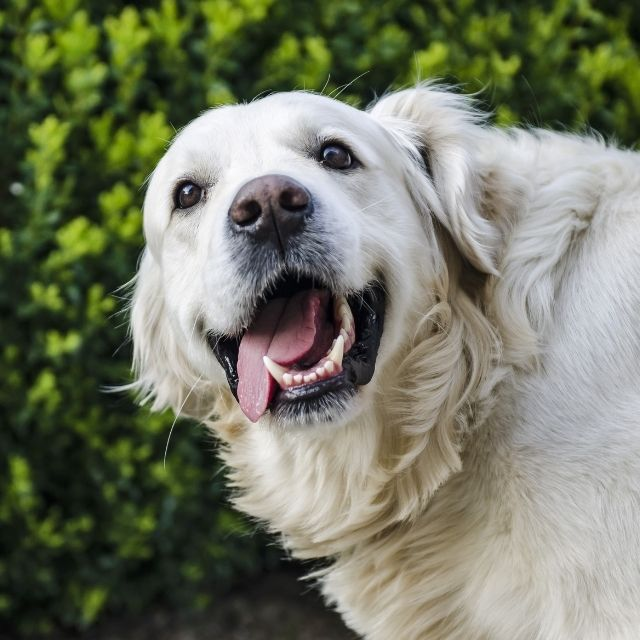

Doğrudan iletişimde bulunabilen ve insan duyguları ile empati yapabilen her canlı gibi
köpekler de ilgi ve sevgi görmeye gereksinim duyarlar. Köpekler, sahiplerine en sadık hayvan türlerinden biri olarak her an
sahiplerinin yanında olmak ister ve onlara sevgilerini cömertçe gösterirler. Canlarını tehlikeye atarak bizleri koruyan ve
koşulsuz şekilde bizi seven köpekler, ilgimizi üstlerinde hissetmeye de bayılırlar. Eğer dikkatiniz başka bir yere odaklıysa
ve köpeğiniz sizden ilgi bekliyorsa bu ilgiyi kendilerine çevirmek için ellerinden geleni yapar ve pek çok farklı davranışta
bulunurlar. Bu ilgi çekme çabasının altında sevgi ve oyun isteği olabildiği gibi onu gezdirmenizi arzu ettikleri de olası
sebeplerdendir. Ayrıca köpeğiniz mama istediğinde de ilgi çekme çabası içine girer.
Havlamak
Köpekler, içgüdüsel olarak havlarlar. Havlamanın birçok çeşidi vardır ve hepsine yüklenecek
anlam birbirinden farklıdır. Eğer köpeğini ön ayaklarını uzatarak size aralıklarla havlıyorsa ilginizi çekmeye çalışıyordur.
Ona odaklanmadığınızı hissettiğinde havlamanın tonu yükselir ve vücut postürü yani duruşu değişir. Siz onunla ilgilenene kadar
havlamaya devam eder ve havlamanın son vurgusunda sesini çatlatarak isteğini daha çok belirtme yoluna gider.
Isırmak
Isırma, köpeklerin verdiği en sert tepki sayılır. Köpekler sahiplerini ciddi şekilde kolay
kolay ısırmazlar. Köpeğiniz ısırma tepkisini ilginizi çekmek için gösteriyorsa her yolu denemiş ve sabrı tükenmiş demektir.
Bu durumda sahiplerinin özellikle elini ve bacağını ısırmaya çalışabilir. Sizi incitmek istemiyorsa kıyafetlerinizi ısırarak
sizi istediği yöne çeker. Bu ilgi isteme davranışında sizi yaralayacak şekilde ısırmaması gerekir. Zaten bunu size kızdığı
için yapmaz fakat köpeklerin ısırma davranışına alışması problem olabilir. Bu nedenle onun bu davranışı terk etmesini
sağlamanın yolları bulunmalıdır.
Yalamak
Köpeklerin sevgilerini göstermeleri şeklinde algılanan yalama ilgi çekme aracı olarak da
karşımıza çıkar. Bu, köpeğinizin ona odaklanmanızı sağlamak için seçtiği nazikçe bir yoldur. Eğer elinizi yalayarak ilginizi
çekemediyse yüzünüze hamle yapacaktır.
>
Sahibine Eşya Getirmek
Köpekler, özellikle oyun oynamak istediklerinde sahiplerine oyuncaklarını getirerek bu
arzularını belli ederler. Onunla onu gezdirmenizin vakti geldiğinde tasmasını getirerek önünüze koyabilir ya da onunla zaman
geçirmenizi sağlamak adına size herhangi bir hediye sunabilir.
Pati Uzatmak ve Burun Değdirmek
Kimi köpekler sahipleri ile iletişim kurmak ve o anda sahibinin odağı olabilmek için ısırma
yolunu seçerken kimileri de ıslak burunlarını değdirerek kendi varlıklarını hissettirirler. Bu ısırmadan daha yumuşak bir
yoldur ve burun değdirdiğinde hala onunla ilgilenmediğinizi görürse bu davranış pati uzatmayla sonuçlanır. Patisini önce size
doğru uzatıp daha sonra size fiziksel temasta bulunacaktır.
Göz Teması Kurmaya Çalışmak
Köpekler dikkatlerini çeken herhangi bir noktaya kilitlenmediklerinde ve mama yemediklerinde
yani uyanık oldukları her an sahiplerini kollarlar. Gözü hep sahiplerinin üzerinde olan sevimli dostlarınızla göz teması
kurmanız onlar için adeta bir çağrıdır ve sizinle ilk iletişimi gözleri ile kurarlar. Dolayısıyla ilginizi çekmek isteyen
köpeğiniz öncelikle sizin görüş alanınıza girecek ve bakışlarınızı yakalamaya çalışacaktır.